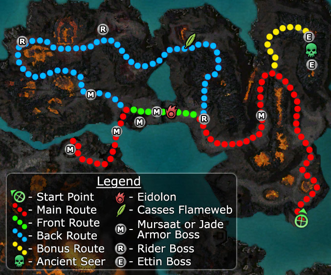

Elite: Incendiary Arrows
M23
Ring of Fire
◉ Mission Map

Click to enlarge · Local cache · Wiki
Summary (click to expand)
The Door of Komalie is not far off. Establish a foothold on the island and begin to work your way towards it.
Region: Ring of Fire Islands · Mission: 23 of 25 · Type: Cooperative
✓ Objectives
→ Walkthrough
At the beginning, Brechnar Ironhammer sacrifices his life to buy time and open the field by luring the Mursaat away. You cannot save him, he is scripted to die once he reaches his destination (even without being attacked and regardless of his health). Head north, engage the Mursaat patrols carefully to avoid over-aggro.
From here onwards players will encounter Mursaat towers. These structures will remove your team's enchantments and also drain energy fast. Destroy its Ether Seal to turn the effects off. The towers are always guarded by Jade Bows, and it is unwise to fight them together. Either use a long/flat bow to pull the Jade away from the tower, or spike the seal first. Sometimes Nightmares spawn around the tower.
Following the north-west path from the first tower you will encounter an Ettin boss followed by a fork in the road: the northern path leads to the bonus giver and the southern proceeds with the mission.
The area also features lava pools with ettins on the other side. Choose between either pulling the ettins across the lava or rushing out of it to the other side to battle them. Avoid standing in the lava while fighting the Ettins.
Vizier Khilbron will appear after the first lava pool to warn the party and suggest an alternative route. Despite his advice, most players find the front gate easier than the back route. The choice is up to you.
Front gate
The front gate is heavily guarded by the Mursaat and four towers, two outside the gate and two inside. Pull the Mursaat away from the towers first and then take out the two outer towers. You can clear the Mursaat patrols behind the gate with spells before destroying the seals to open it.
The two inner towers effects radii overlap just past the stairs making it hard to turn them off. Clear the patrols by pulling them to the stairs. The Ether Seals of these two towers face away from the gate, so the safest way to destroy them is to run past them first and start the attack from the opposite side. But beware of the Mursaat at the back, you will have to dispatch them first.
Now break the seal to access the lever of the main gate and defeat the boss guarding it. Touch the lever to open the main gate. Cross the jade bridge and defeat the last Mursaat boss to complete this mission.
Back road (blue way on the wikimap)
Is a large and dangerous circular detour on an area inhabitated by Lava Spitters and numerous Lava Imps with strong nuking capabilities, especially in groups (Meteor Showers). The last tend to cluster, so make use of AoE interrupt skills (e.g. Cry of Frustration, Maelstrom).
There is an Ether Seal at the back of the Citadel Guardhouse, destroy it to enter. Clear the area of Mursaat, break the seal to access the lever of the main gate and defeat the boss guarding it. Touch the lever to open the main gate. Cross the jade bridge and defeat the last Mursaat boss to complete this mission.
★ Bonus
To activate the bonus, speak to the Ancient Seer found by the northern turn of the first fork. The Ancient Seer tells you to bring the Spectral Essence from an Eidolon who will appear once the four towers of the Citadel Guardhouse are deactivated. Take the Spectral Essence to the Ancient Seer to complete the bonus. This Ancient Seer will infuse your armor.
◆ Hard Mode
No dedicated Hard Mode section on the wiki — expect tougher foes and adjusted mechanics. See walkthrough notes.
☠ Bosses & Elites
Elite: Backbreaker
Elite: Spike Trap
Elite: Mist Form
Elite: Devastating Hammer
Elite: Oath Shot
Elite: Aura of Faith
Elite: Life Transfer
Elite: Energy Surge
Elite: Thunderclap
Elite: Shield of Deflection
Elite: Migraine
Elite: Ether Prodigy
✦ Tips & Notes
Skill recommendations
- To counter the Mursaat Towers energy drain, use Glyph of Lesser Energy, signets and adrenaline-based damage. Healers can stand out of range and use party healing spells. A Signet of Spirits-based build can be used to destroy the Ether Seals without the need of staying inside the energy drain radius.
- Stance breaker skills e.g. Wild Blow to remove Dryder's Defenses from Lava Spitters (if taking the back road), Whirling Defense from Jade Bows, and Physical Resistance/Mantra of Flame from Mursaat Mesmers.
Notes
- The four Mursaat and two Jade bosses will always appear during the mission in one of the six shared spawn points.
- The two Ettin bosses will appear at one of the two shared spawn points.
- The mission ends once you kill the last boss and the small Mursaat group. If you want to capture the elite skill of this boss, kill it before the group so that you have enough time to activate the Signet of Capture.
- Despite the Seer's words that the Eidolon will spawn after destroying the Mursaat towers, you need to accept the bonus objective from the Seer as well. Otherwise the Eidolon will not spawn.
- Complete exploration of this area contributes approximately 1.1% to the Tyrian Cartographer title.
- Completion of this mission will fill in page #16 of The Flameseeker Prophecies storybook.
- After completing this mission, your party will be taken to Abaddon's Mouth.